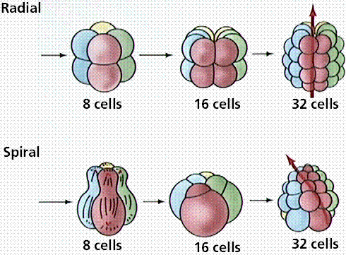

Evolutionary History of Animal Groups | Deuterostomes and Protostomes | Phylum Echinodermata
Phylum Hemichordata | Phylum Chordata | Subphylum Urochordata | Subphylum Cephalochordata
Subphylum Vertebrata | Class Chondrichthyes | Class Osteichthyes | Class Amphibia | Class Reptilia
Class Aves | Class Mammalia | Links
Coelomates are animals that have internal body cavities, or coeloms. Humans are coelomates, since we have an abdomenal cavity containing digestive organs, some of the excretory and reproductive organs, and a thoracic cavity that contains the heart and lungs. Coelomates also form a variety of internal and external skeletons. External skeletons and coeloms appeared during the Cambrian-Ordovician time. These skeletons offered several advantages to their producers:
First appearances and relative diversity (width of shaded area) for major groups of animals. Image from Purves et al., Life: The Science of Biology, 4th Edition, by Sinauer Associates (www.sinauer.com) and WH Freeman (www.whfreeman.com), used with permission.
Protostomes (mollusks, annelids, and arthropods) develop so that the first opening in the embryo is the mouth (protostome = first mouth). Protostomes are bilaterally symmetrical, have three germ layers, the organ level of organization, the tube-within-a-tube body plan, and a true coelom. The coelom, a body cavity between the digestive tract and body wall completely lined by mesoderm allows the digestive system and body wall to move independently. Because of this, internal organs can be more complex. Coelomic fluid assists respiration and circulation by diffusing nutrients, and excretion by accumulating wastes. This fluid functions in place of several organ systems in the higher animals. The coelom may serve as a storage area for eggs and sperm, facilitating development of these gametes within the animal body. Coelomic fluid protects internal organs and also serves as a hydrostatic skeleton. Protostomes develop their embryo by spiral cleavage.
Deuterostomes (as exemplified by the echinoderms and chordates) develop the anus first, then the mouth at the other end of the embryo. Deuterostomes are coelomate animals these embryological characteristics:

Differences in cleavage between the embryos of protostomes and deuterostomes. Images from Purves et al., Life: The Science of Biology, 4th Edition, by Sinauer Associates (www.sinauer.com) and WH Freeman (www.whfreeman.com), used with permission.
The previous chapter looked at the protostomes (annelids, molluscs, and arthropods). This chapter will examine the deuterostomes, primarily the echinoderms and chordates.
There are 6000 species of echinoderms; all extant species are marine. The phylum Echinodermata includes the sea urchins, sea stars, sea cucumbers, and starfish. Most adults have radial symmetry, while their larvae are bilaterally symmetrical. Echinoderms have an endoskeleton consisting of calcareous plates bearing spines. Radial symmetry appears to be an advantage to the mostly bottom-dwelling echinoderms, who can thus feed in every direction. Adult echinoderms have no brain. Members of the phylum have a water vascular system that powers their multitude of tube feet.
Anatomy of an adult sea star. Lower (right) image is a cross section through an arm of the adult sea star. Images from Purves et al., Life: The Science of Biology, 4th Edition, by Sinauer Associates (www.sinauer.com) and WH Freeman (www.whfreeman.com), used with permission.
There are several taxonomic classes of echinoderms of varying familarity to the general public.
The class Crinoidea includes about 600 species of crinoids, the stalked sea "lilies" and the motile feather stars. Their branched arms are used for filter-feeding and give the animals a flowerlike or plantlike appearance (hence the term sea lily). Crinoid stalks and blastoid heads are common fossils in certain parts of North America.
Specimen of the Carboniferous crinoid Paradichocrinus planus. Image is from http://www.tyrrellmuseum.com/tour/crinoid.jpg.
The class Holothuroidea has 1,500 species of sea cucumbers. Sorry, these are NOT good eating as a general rule! Holothuroideans have a long leathery body, and feed by tentacles located around their mouth.
Scientists generally place about 950 species of sea urchins and sand dollars are in the class Echinoidea. Both sea urchins and sand dollars have spines thar they use for locomotion, defense, and burrowing. Sea urchins have long, blunt spines. Sand dollars are flattened with a five-part flowerlike pattern of pores for skin projections.
This image of a pencil sea urchin (left) is from http://www.seashells.org/identcatagories/seaurchins.htm; the right image of a bed of sea urchins is from http://seaurchin.org/.
The image of a sand dollar is from http://www.weblync.com/ccbeach/.
The class Ophiuroidea consists of approximately 2,000 species of brittle stars. Brittle stars have a central disk from which long, flexible arms radiate. These long arms allow them to move rapidly.
The class Asteroidea contains about 1,500 species of sea stars (commonly known as starfishes). Most starfish have a dorsoventrally flattened body. Starfish have a central disk to which five, or a multiple of five, sturdy arms are attached. Sea stars are common along rocky coasts where they eat clams, oysters, and other bivalves.
The five-rayed body has an oral (mouth) and aboral (upper) side. Spines project from the endoskeletal plate through the thin dermis. Pincerlike pedicellarie keep the surface free from particles. Gas exchange is conducted by skin gills. On the oral surface, each arm has a groove lined with tube feet.
A sea star feeds by everting its stomach. It positions itself over a bivalve and attaches tube feet to each side of the shell. By working tube feet in an alternating fashion, it opens the shell open. Only a small crack is needed to insert its cardiac stomach into the prey. Stomach enzymes begin digesting the bivalve as it is trying to close its shell. Partially digested food is then taken into the pyloric stomach for complete digestion. A short intestine opens at the anus on the aboral side.
Each arm has a well-developed coelom containing a pair of digestive glands and male or female gonads. The nervous system is a central ring with radial nerves in each arm. A light-sensitive eyespot is at the end of each arm, facilitating coordinated but slow responses.
Locomotion depends upon the water vascular system. Water enters on the aboral side through the sieve plate, which is also known as the madreporite. Water passes through a stone canal to a ring canal and into the radial canals in each arm. The radial canals feed into lateral canals extending into tube feet, each of which has an ampulla. Contraction of an ampulla forces water into the tube foot, expanding it; when the foot touches a surface, the center withdraws forming a suction and adhering to surfaces.
Echinoderms lack complex respiratory, excretory, and circulatory systems. Fluids within the coelomic cavity carry out the function of diffusing substances and gases. Gas exchange occurs across the skin gills and tube feet. Nitrogenous wastes diffuse through coelomic fluid and across the body wall. Cilia on the peritoneum lining the coelom keep the coelomic fluid moving.
Sea stars reproduce both sexually and asexually. If the body is fragmented, each fragment can regenerate a whole animal. Sea stars spawn and release either eggs or sperm at the same time. The bilateral larvae undergoes a metamorphosis to become a radially symmetrical adult.
The Phylum Hemichordata includes about 90 species of acorn worms. Some acorn worms living on tidal mud flats have a proboscis, a collar, and a trunk. The dorsal nerve cord in the collar and trunk resembles the nerve cord of chordates. The pharynx below the collar has gill slits. Larva of hemichordates resembles the larva of echinoderms. These facts cause some scientists to believe echinoderms and hemichordates share a common ancestor and that hemichordates and chordates are related by a common ancestor.
Hemichordates are classified into three classes, two with living members, one consisting of only fossil forms. The Enteropneusta includes the acorn worms; the Pterobranchia includes 20 species of colonial bottom dwelling worms. The fossil (extinct) group, the Graptolithina (graptolites), are common fossils in the Ordovician and Silurian. They have recently been placed in this phylum.
Specimen of acorn worm (L), a member of the Phylum Hemichordata, and a fossil of a graptolite (R, Monograptus), a member of an extinct group of hemichorates. Images from http://www.ucmp.berkeley.edu/chordata/hemichordata.html.
The Phylum Chordata includes about 45,000 species that occupy nearly all environments. All chordates at sometime during their life history have:
These features are seen only during embryonic development in most vertebrates. Not all chordates are vertebrates. In the invertebrate chordates, fish, and amphibian larvae, pharyngeal gill pouches become functioning gills. Terrestrial vertebrates have their pouches modified for various purposes; in humans, the first pouches become the auditory tubes, the second become tonsils, and the third and fourth pairs become the thymus and parathyroid glands.
Most chordates have an internal skeleton against which muscles work. Most have a postanal tail that extends beyond the anus; in some (like humans), this may only appear in embryos.
The evolutionary origin of chordates remains a mystery, although biochemistry and comparative embryology indicates echinoderms and chordates share a common ancestry. Although scanty, fossil finds from the Cambrian suggest chordates were present in the Burgess Shale deposits.
Not all chordates are vertebrates. Some chordates are invertebrates, lacking a vertebral column. In these invertebrate chordates, the notochord persists and is never replaced by the vertebral column.
The subphylum Urochordata contains 1,250 species of tunuicates that have gill slits. Adults have a body composed of an outer tunic with an incurrent and excurrent siphon. When they are disturbed, tunicates tend to squirt water out. Water passes into a pharynx and out numerous gill slits, the only chordate characteristic that remains in adults. Microscopic particles adhere to a mucous secretion in the pharynx and are eaten. The larvae are bilaterally symmetrical and have the three chordate characteristics. Tunicate larva metamorphose into the sessile adult. Beating of numerous cilia lining the inside of the pharynx creates a current to move water through a tunicate. Some suggest larvae became sexually mature without developing tunicate characteristics; thus, a urochordate larva was ancestral to vertebrates; or a cephalochordate larva may have been ancestral to vertebrates.
Habit photograph of an unidentified urochordate. Image is from http://www.ucmp.berkeley.edu/chordata/urochordata.html.
The lancelets have three chordate characteristics. The 23 species of lancelets are in the genus Branchiostoma in the subphylum Cephalochordata. Their elongated, lance-shaped body resembles the lancelet, a two-edged surgical knife. They inhabit shallow coastal waters; they lie partly buried in sandy substrates and filter feed. Lancelets feed on microscopic particles filtered from the constant stream of water that enters the mouth and exits through the gill slits into an atrium that opens at the atriopore. Lancelets retain the three chordate characteristics as an adult. The notochord extends from head to tail, accounting for the name "Cephalochordata." Lancelets have segmented muscles and their dorsal hollow nerve cord has periodic branches.
Anatomy of Ascaris, a typical chordate. Image from Purves et al., Life: The Science of Biology, 4th Edition, by Sinauer Associates (www.sinauer.com) and WH Freeman (www.whfreeman.com), used with permission.

Images of Pikaia, a fossil chordate from the Burgess Shale (Cambrian) of British Columbia, Canada. Left, reconstruction diagram from http://www.nmnh.si.edu/paleo/ppikaia.htm; right (fossil), from http://www.nmnh.si.edu/paleo/fpikaia.gif.
The vertebrates comprise a large group of chordates, and are subdivided into seven classes (3 classes of fish, amphibians, reptiles, birds, and mammals). Vertebrates have an internal skeleton of cartilage or bone, with vertebrae surrounding the dorsal nerve cord.
The subphylum Vertebrata consists of about 43,700 species of animals with backbones. Vertebrates exhibit all three of the chordate characteristics at some point during their lives. The embryonic notochord is replaced by a vertebral column in the adult. The vertebral column is made of individual hard segments (vertebrae) surrounding the dorsal hollow nerve cord. The nerve cord is the one chordate feature present in the adult phase of all vertebrates. The vertebral column, part of a flexible but strong endoskeleton, is evidence that vertebrates are segmented. The vertebrate skeleton is living tissue (either cartilage or bone) that grows as the animal grows.
The endoskeleton and muscles form an organ system (the musculoskeletal system) that permits rapid and efficient movement. The pectoral and pelvic fins of fishes evolved into jointed appendages that allowed vertebrates to move onto land. The skull, the most anterior component of the main axis of the vertebrate endoskeleton, encases the brain. The high degree of cephalization in vertebrates is accompanied by complex sense organs concentrated in the head region. Eyes developed as outgrowths of the brain. Ears were equilibrium devices in aquatic vertebrates that function as sound-wave receivers in land vertebrates. Vertebrates have a complete digestive system and a large coelom. Their circulatory system is closed, with respiratory pigments contained within blood vessels. Gas exchange is efficiently accomplished by gills, lungs, and in a few cases, moist skin. Kidneys are efficient in excretion of nitrogenous waste and regulation of water. Reproduction is usually sexual with separate sexes.
The first vertebrates were fishlike. Fishes are aquatic, gill-breathing vertebrates that usually have fins and skin covered with scales. The larval form of a modern-day lamprey, which looks like a lancelet, may resemble the first vertebrates: it has the three chordate characteristics (like the tunicate larva), as well as a two-chambered heart, a three-part brain, and other internal organs that are like those of vertebrates.
Small, jawless, and finless ostracoderms were the earliest vertebrates. They were filter feeders, but probably were also able to move water through their gills by muscular action. Ostracoderms have been found as fossils from the Cambrian through Devonian periods, when the group finally went extinct. Although extant jawless fishes lack protection, many early jawless fishes had large defensive head shields.
These long, eel-like, jawless fish are free-swimming predators on other fish. Lampreys hatch in freshwater and many live their lives entirely in freshwater. Some lampreys migrate to the sea, but must return to freshwater to reproduce. Lampreys have a sucker-like mouth that lacks a jaw.
Drawing of several lampreys. From the Image Gallery at lycos.com. (Five Lampreys, Lydon, A. F., 1879 Animal Kingdom: Vintage Illustration).
Sea lamprey on lake trout. Image courtesy of Great Lakes Fishery Commission (http://www.glfc.org/slft.htm), used by permission.
Sea lamprey mouth, close-up. Image courtesy of Great Lakes Fishery Commission (http://www.glfc.org/slft.htm), used by permission.
Members of the class Myxini have a partial cranium (skull), but no vertebrae. Their skeleton is made of of cartilage, as is that of sharks. Hagfish lack jaws, and for this reason used to be classified with the lampreys in a group called the Agnatha ("no jaws") or the Cyclostomata ("round mouth").
This image of a hagfish is from http://oberon.educ.sfu.ca/splash/wednesday/hag1.jpg. The yellow in the background is the slime that hagfish secrete.
The fish first appeared during the Cambrian Period. Whether fish first evolved in fresh or salt water is unclear from the fossil record. The jawless fish are the most primitive group, although they were a very important group during the Silurian and Devonian periods. Hagfish and lampreys are the only living members of this class today. They have long, cylindrical bodies with cartilage skeletons and no paired fins.
The first jawed fish were the Placoderms, an extinct group of Devonian-aged jawed fishes. Placoderms were armored with heavy plates and had strong jaws and paired pectoral and pelvic fins. Paired fins allow fish to balance and to maneuver well in water, which facilitate both predation and escape.

The fossil on the right is a cast of the placoderm, Bothriolepis, is from http://www.toyen.uio.no/palmus/galleri/montre/english/x18.htm. The fossil on the left is a model of the placoderm Coccosteus and is from http://www.toyen.uio.no/palmus/galleri/montre/english/x19.htm.
The evolution of jaws is an example of evolutionary modification of existing structures to perform new functions. Jaws are modified gill arches, and allowed the exploitation of new roles in the habitats: predators with powerful jaws. There are two classes of jawed fish: the cartilaginous fish and the bony fish.

Steps in the evolution of jaws by modification of gill arches. Images from Purves et al., Life: The Science of Biology, 4th Edition, by Sinauer Associates (www.sinauer.com) and WH Freeman (www.whfreeman.com), used with permission.
The class Chondrichthyes contains approximately 850 species of skates, rays, and sharks. They have jaws, lots of teeth, paired fins, and a cartilage endoskeleton. Cartilaginous fish first appeared during the Devonian Period and expanded in diversity during the Carboniferous and Permian before nearly disappearing during the great extinction that occurred near the end of the Permian. A large group of cartilagenous fish still survives today and is an important part of the marine fauna.
These fish have five to seven gill slits on both sides of the pharynx, and lack the gill covers found in bony fish. The chondrichthyian body is covered epidermal placoid (or toothlike) scales. Developmental studies show the teeth of sharks are enlarged scales.
The largest sharks are filter feeders, not the predators of Hollywood movies. Basking and whale sharks eat tons of crustaceans (small krills, etc.) filtered from the water. Most sharks are fast-swimming, open-sea predators. The great white shark feeds on dolphins, sea lions and seals (and people sometimes). In other words, anything is WANTS to!
Shark ansd Ray GIFs from http://www.postmodern.com/~fi/sharkpics/clipart/large1.htm and http://www.postmodern.com/~fi/sharkpics/clipart/rays.htm.
Rays and skates live on the ocean floor; their pectoral fins are enlarged into winglike fins; they swim slowly. Stingrays have a venomous spine. The electric ray family can feed on fish that have been stunned with electric shock of over 300 volts. Sawfish rays have a large anterior "saw" that they use to slash through schools of fish.
(shark animated GIF from http://www.postmodern.com/~fi/sharkpics/clipart/animated.htm)
There are about 20,000 species of bony fish, found both in marine and freshwater, comprising the class Osteichthyes. This class is divided into two groups: the lobe-finned (Sarcopterygii) and ray-finned fish (Actinopterygii). The bony fish have a bony skeleton. Most species in this class are ray-finned with thin, bony rays supporting the fins. A few fishes are lobe-finned and are thought to be related to the ancestors of amphibians.
Cross section of a fish. Note the location of various internal structures such as the vertebra, coelom, and gut. Image from Purves et al., Life: The Science of Biology, 4th Edition, by Sinauer Associates (www.sinauer.com) and WH Freeman (www.whfreeman.com), used with permission.
The ray-finned fish include familiar species such as tuna, bass, perch, and trout. Ray-finned fish are the most successful and diverse of the vertebrates (more than half of all vertebrate species belong to this group). Thin, bony supports with radiating bones (hence the term ray-finned) hold the fins away from the body. Ray-finned fish obtain their food by filter feeding and by preying on insects and other animals. Their skin is covered by scales formed of bone. These scales are homologous to our own hair (and the feathers of birds), being derived from the same embryonic tissues. The gills in this group of fish do not open separately and are covered by an operculum. Ray-finned fish have a swim bladder, a gas-filled sac, that regulates buoyancy and depth. Sharks lack this feature, which enables fish to "sleep" without sinking. The swim bladder acts much the way a ballast tank does on a submarine to control buoyancy.
Salmon, trout, and eels can migrate from fresh water to salt water, but must adjust kidney and gill function to the tonicity of their environments. In freshwater, the fish is hyoptonic relative to its aqueous (watery) environment. Water is constantly flooding into the fish, and must be removed by the fish's excretory system. In seawater, the fish is now hypertonic or isotonic relative to the seawater, requiring conservation of body water.
Bony fishes depend on color vision to detect both rivals and mates. Sperm and eggs are released into the water, with not much parental care for the newborn. Most fish have fertilization and embryonic development taking place outside the female's body.
This group includes six species of lungfishes and one species of coelacanth that has muscular fins with large, jointed bones attaching the fins to the body. Lobe-finned fish have fleshy fins supported by central bones, homologous to the bones in your arms and legs. These fins underwent modification, becoming the limbs of amphibians and their evolutionary descendants such as lizards, canaries, dinosaurs, and humans.
The lungfish are a small group found mostly in freshwater stagnant water or ponds that dry up in Africa, South America, and Australia.
Australian lungfish. Image is from http://www.burkesbackyard.com.au/facts/1998/pets/images/lungfish_16.gif.
Coelacanths live in deep oceans. They were once considered extinct, although more than 200 have been captured since 1938. Mitochondrial DNA analysis supports the hypothesis that lungfish are probably the closest living relatives of amphibians.
Coelacanth, a living fossil. Image is from http://www.dierentuin.net/pictures/coelacanth.jpg.
The crossopterygian fish (represented by the marine extant deep-living coelacanth and extinct freshwater forms) are regarded as ancestors of early amphibians. Extinct crossopterygians had strong fins, lungs, and a streamlined body capable of swimming as well as traveling short distances out of water.
Comparison of the skeletons of a crossopterygian lobe-finned fish and an early amphibian. Image from Purves et al., Life: The Science of Biology, 4th Edition, by Sinauer Associates (www.sinauer.com) and WH Freeman (www.whfreeman.com), used with permission.
The term "tetrapod" (meaning four-limbed or four-footed) has historically been applied to the land vertebrates (amphibians, reptiles, dinosaurs, birds, and mammals). There have recently been proposals to restrict its use to a more cladistically sound definition, summarized by The Definition of the Taxon Tetrapoda. All other animals from this point have four limbs and are called tetrapods. I use the term here not in the strict cladistic sense, but in a more inclusive sense to include the living forms as well as fossil vertebrates that had free digits. A discussion of tetrapod phylogeny is available at Phylogeny of stegocephalians, from the Tree of Life Page.
Most zoologists would accept that the Devonian lobe-finned fishes were ancestral to the amphibians. Animals (both vertebrate as well as many invertebrates such as insects) that live on land use limbs to support the body, especially since air is less buoyant than water. Lobe-finned fishes and early amphibians also had lungs and internal nares to respire air.
Two hypotheses have been proposed to explain the evolution of amphibians from lobe-finned fishes.
The first amphibians diversified during Carboniferous Period (commonly known as the Age of Amphibians).
This class includes 4000 species of animals that spend their larval/juvenile stages in water, and their adult life on land. Amphibians must return to water to mate and lay eggs. Most adults have moist skin that functions in helping their small, inefficient lungs with gas exchange. Frogs, toads, newts, salamanders, and mud puppies are in this transitional group between water and land.
Amphibian features not seen in bony fish include:
Reproduction involves a return to the water. Ther term "amphibian" refers to two life styles, one in water, the other on land. Amphibians shed eggs into the water where external fertilization occurs, as it does in fish. Generally, amphibian eggs are protected by a coat of jelly but not by a shell. The young hatch into aquatic larvae with gills (tadpoles). Aquatic larvae usually undergo metamorphosis to develop into a terrestrial adult.
Amphibians, like fish, are ectothermic; they depend upon external heat to regulate body temperatures. If the environmental temperature becomes too low, ectotherms become inactive.
Salamanders more likely resemble earliest amphibians due to their S-shaped movements. Salamanders practice internal fertilization; males produce a spermatophore that females pick up. Frogs and toads are tailless as adults, with their hind limbs specialized for jumping.
Vintage illustration of frogs (left), from the Internet. Closeup of a frog, from http://www.conservation.state.mo.us/conmag/1997/03/52.jpg.
This class of 6000 species includes the snakes, lizards, turtles, alligators, and crocodiles. Reptiles that lay eggs lay an egg surrounded by a thick protective shell and a series of internal membranes. Reptiles have internal fertilization: their gametes do not need to be released into water for fertilization to occur.
The amniotic egg is a superb adaptation to life on land. While amphibians need to lay their eggs in water, their descendants (reptiles) were not as strongly tied to moist environments and could truly expand into more arid areas. Reptiles were the first land vertebrates to practice internal fertilization through copulation and to lay eggs that are protected by a leathery shell with food and other support for the growing embryo.
The amniote egg contains extraembryonic membranes that are not part of the embryo and are disposed of after the embryo has developed and hatched. These membranes protect the embryo, remove nitrogenous wastes, and provide the embryo with oxygen, food, and water. The amnion, one of these extraembryonic membranes, creates a sac that fills with fluid and provides a watery environment in which the embryo develops. The embryo develops in a "pond within the shell".
Structure of the amniote egg, a defining characteristic for reptiles, birds, and mammals. Image from Purves et al., Life: The Science of Biology, 4th Edition, by Sinauer Associates (www.sinauer.com) and WH Freeman (www.whfreeman.com), used with permission.
Evolutionary History of Reptiles
Reptiles first evolved during the Carboniferous time and partly displaced amphibians in many environments. The first reptiles (often referred to as the stem reptiles) gave rise to several other lineages, each of which adapted to a different way of life. Reptilian success was due to their terrestrial (amniotic) egg and internal fertilization, as well as their tough leathery skin, more efficient teeth and jaws, and in some, bipedalism (traveling on their hind legs, allowing the forelimbs to grasp prey or food, or become wings). One group, the Pelycosaurs (fin-backed or sail lizards) are related to therapsids, mammal-like reptiles ancestral to mammals. Other groups returned to aquatic environments. Ichthyosaurs were fishlike (or dolphin-like) free-swimming predators of the Mesozoic seas. The plesiosaurs had a long neck and a body adapted tp swimming though use of flippers (legs that evolutionarily reverted to a flipper-like shape). These free-swimmers also adapted to live birth of their young (since they could not return to the land to lay eggs). Thecodonts were the reptiles that gave rise to most of the reptiles, living and extinct. Pterosaurs were flying reptiles that dominated the Mesozoic skies. They had a keel for attachment of flight muscles and air spaces in bones to reduce weight.
Dinosaurs (descended from some thecodonts) and mammal-like reptiles' had their limbs beneath the body providing increased agility and facilitating gigantic size. Lizards have their elbows out (like you do when you do a push-up). By having their elbows in, dinosaurs and mammals place more of the weight of the body on the long bones instead of the elbows, ankles, and knees.
Relationship between limbs and body. Note that reptiles have their upper limbs jutting out from the body, while mammals have their limbs in line with the body, supporting and more easily raising the body mass off the ground. Image from Purves et al., Life: The Science of Biology, 4th Edition, by Sinauer Associates (www.sinauer.com) and WH Freeman (www.whfreeman.com), used with permission.
Reptiles dominated the earth for about 170 million years during the Mesozoic Era. The mass extinction of many reptile groups at the close of the Mesozoic (the Cretaceous Period) has been well documented and the subject of many hypotheses. The 1980 hypothesis by Luis and Walter Alvarez and others proposes the impact of a large meteorite at the end of the Cretaceous period caused a catastrophic environmental collapse that led to the extinction of nearly 50% of all species of life on Earth. The survivors, birds and mammals, reaped the spoils and diversified during the Cenozoic Era. Three groups of reptiles remain: turtles, snakes/lizards, and crocodiles/alligators.
About 6,000 species of reptiles comprise the Class Reptilia. Most live in tropics or subtropics. Lizards and snakes live on land, while turtles and alligators live in water for much of their lives. Reptiles have a thick, scaly skin that is keratinized and impermeable to water. This same keratin is a protein found in hair, fingernails, and feathers. Protective skin prevents water loss but requires several molts a year. Reptilian lungs are more developed than those of amphibians. Air moves in and out of the lungs due to the presence of an expandable rib cage in all reptiles except turtles. Most reptiles have a nearly four-chambered heart. The crocodile has a completely four-chambered heart that more fully separates oxygen-rich blood from from deoxygenated or oxygen-poor blood. The well-developed kidneys excrete uric acid; less water is lost in excretion. Reptiles are ectothermic; they require a fraction of the food per body weight of birds and mammals, but are behaviorally adapted to warm their body temperature by sunbathing.
Photograph of a lizard (L) and a gavial (R), by Bill Everitt, obtained from PicturesNOW!
Snakes and lizards live mainly in the tropics and desert. Lizards have four clawed legs and are carnivorous; marine iguanas on the Galapagos are adapted to spend time in the sea; frilled lizards have a collar to scare predators, and blind worm lizards live underground. Snakes evolved from lizards and lost their legs as an adaptation to burrowing. Their jaws can readily dislocate to engulf large food. The snake's tongue collects airborne molecules and transfers them to the Jacobson's organ for tasting. Some poisonous snakes have special fangs for injecting their venom.
Turtles have a heavy shell fused to the ribs and thoracic vertebrae; they lack teeth but use a sharp beak; sea turtles must leave the ocean to lay eggs onshore.
Galapagos tortoises, image from http://home.capp.ch/marcel/Gal_Turt.htm.
Crocodiles and alligators are largely aquatic, feeding on fishes and other animals. They both have a muscular tail that acts as a paddle to swim and a weapon. The male crocodile bellows to attract mates. In some species the male also protects the eggs and young.
Cladistic analyses place the birds, alligators, and dinosaurs in the same clade, the Archosauria (or "ruling reptiles"). This group is a major group of diapsids (vertebrates that have two openings in their skulls) that have single openings in each side of the skull, in front of the eyes (antorbital fenestrae), among other characteristics. This helps to lighten the skull, provides more room for muscles and other tissues, and allows more skull flexibility when eating. Other typical archosaurian characteristics include another opening in the lower jaw (the mandibular fenestra), a high narrow skull with a pointed snout, teeth set in sockets, and a modified ankle joint.
The ancestral archosaurs probably originated some 250 million years or so ago, during the late Permian period. Their descendants (such as the dinosaurs) dominated the realm of the terrestrial vertebrates for a most of the Mesozoic Era. The birds and crocodilians are the last living groups of archosaurs.
The class Aves (birds) contains about 9000 species. Birds evolved from either a dinosaurian or other reptilian group during the Jurassic (or possibly earlier). The earliest bird fossils, such as the Jurassic Archaeopteryx or Triassic Protavis, display a mosaic of reptilian and bird features (teeth in the bill, a jointed tail, and claws on the wing are reptilian; feathers and hollow bones are bird-like).

Archaeopteryx, once considered the first bird. The fossil is from the Solenhoefen Limestone (Jurassic) of Germany. Image is from http://www.ucmp.berkeley.edu/diapsids/birds/.
The distinguishing feature of birds is feathers: which provide insulation as well as aid in flight.
Structure of a feather. Image from Purves et al., Life: The Science of Biology, 4th Edition, by Sinauer Associates (www.sinauer.com) and WH Freeman (www.whfreeman.com), used with permission.
Hummingbird Feather Shaft, Barbs and Barbules (SEM x185). This image is copyright Dennis Kunkel at www.DennisKunkel.com, used with permission.
Remember, not all animals that fly have feathers, but all almost every endothermic animal (warm-blooded) has a covering of hair or feathers for insulation. The recent (1999) discovery of a "feathered" dinosaur adds credence to this speculation. The dinosaur could not fly, so of what use would feather be but insulation (or possibly mating).
Modern birds appeared during the early Tertiary, and have adapted to all modes of life: flying (condors, eagles, hummingbirds), flightless-running (ostriches, emus), and swimming (penguins). Birds exhibit complex mating rituals as well as social structure (a pecking order!).
Images of birds from a rich media search at lycos.com.
Class Mammalia contains around 5000 species placed in 26 orders (usually). The three unifying mammalian characteristics are:
Milk is a substance rich in fats and proteins. Mammary glands usually occur on the ventral surface of females in rows (when there are more than two glands). Humans and apes have two mammary glands (one right, one left), while other animals can have a dozen or more. All mammals have hair at some point during their life. Mammalian hair is composed of the protein keratin. Hair has several functions: 1) insulation; 2) sensory function (whiskers of a cat); 3) camouflage, a warning system to predators, communication of social information, gender, or threats; and 4) protection as an additional layer or by forming dangerous spines that deter predators. Modifications of the malleus and incus (bones from the jaw in reptiles) work with the stapes to allow mammals to hear sounds after they are transmitted from the outside world to their inner ears by a chain of these three bones.
Mammals first evolved from the mammal-like reptiles during the Triassic period, about the same time as the first dinosaurs. However, mammals were minor players in the world of the Mesozoic, and only diversified and became prominent after the extinction of dinosaurs at the close of the Cretaceous period.
Mammals have since occupied all roles once held by dinosaurs and their relatives (flying: bats; swimming: whales, dolphins; large predators: tigers, lions; large herbivores: elephants, rhinos), as well as a new one (thinkers and tool makers: humans). There are 4500 species of living mammals.
Subclass Prototheria: Order Monotremata: Monotremes (typified by the platypus and echinda) lay eggs that have similar membranes and structure to reptilian eggs. Females burrow in ground and incubates their eggs. Both males and females produce milk to nourish the young There are two families living today and quite a few known from the fossil record of Gondwana. Monotremes are today restricted to Australia and New Guinea. The earliest fossil monotreme is from the early Cretaceous, and younger fossils hint at a formerly more widespread distribution for the group. While their fossil record is scarce, zoologists believe that monotremes probably diverged from other mammals during the Mesozoic. Monotremes have many differences with other mammals and are often placed in a separate group, the subclass Prototheria. They retain many characters of their therapsid ancestors, such as laying eggs, limbs oriented with humerus and femur held lateral to body (more lizard-like), a cloaca, skulls with an almost birdlike appearance, and a lack of teeth in adults. This suggests that monotremes are the sister group to all other mammals. However, monotremes do have all of the mammalian defining features of the group.

The above image of a platypus (L) is from http://www.australian.com/CairnsWildlifeInWild.html, image of echidna is from http://www.chowan.edu/acadp/science/courses/comparativeanatomy/monotremata/monotrematahtm1.htm.
Subclass Metatheria: Marsupials (such as the koala, opossum, and kangaroo) are born while in an embryonic stage and finish development outside the mother's body, often in a pouch. Marsupial young leave the uterus, crawl to the pouch, and attach to the nipple of a mammary gland and continue their development. Marsupials were once widespread, but today are dominant only in Australia, where they underwent adaptive radiation in the absence of placental mammals. The Metatheria contains 272 species classified in several orders. Metatheres diverged from the lineage leading to the eutherian (placental) mammals by the middle of the Cretaceous period in North America. The earliest marsupial fossils resemble North American opossums. Marsupial fossils are found on other northern hemisphere continents, although they seem not to have been prominent elements of those faunas. On the other hand, in South America and Australia, marsupials continued to be dominant faunal elements. The marsupials of South America began to go extinct in the late Miocene and Early Pliocene (Cenozoic era) when volcanic islands grew together and formed the Isthmus of Panama, allowing North American placental mammals to cross into South America. Australian marsupials remain diverse and dominant native mammals of the fauna. During the Cenozoic Era many marsupials in South America and Australia underwent parallel (or convergent) evolution with placental mammals elsewhere, producing marsupial "wolves", "lions", and saber-toothed marsupial "cats".
A Red Kangaroo (Megaleia rufa), mother with joey, at the Smithsonian's National Zoological Park in Washington, D.C. Smithsonian Photo by Jessie Cohen. ©1992 Smithsonian Institution.
Image of a koala (top) and a tasmanian devil (bottom), from Australian Tourist Com.
Subclass Eutheria: There are 4000 described species of placental mammals, a group that includes dogs, cats, and people. The subclass is defined by a true placenta that nourishes and protects the embryos held within the mother's body for an extended gestation period (nearly two years for an elephant, and nine very long months for a human). The eutherian placenta has extraembryonic membranes modified for internal development within the uterus. The chorion is the fetal portion of placenta, while the uterine wall grows the maternal portion. The placenta exchanges nutrients, oxygen, and wastes between fetal and maternal blood.
There are 12 orders of placental mammals. Classification is based on the mode of locomotion and methods of obtaining food. Prominent orders include the bats (order Chiroptera), horses (order Perissodactyla), whales (order Cetacea), mice (order Rodentia), dogs (order Carnivora), and monkeys/apes/humans (order Primates).
Image of a bengal tiger (L), from the India Tourist Ofc LA. Image of a drill, from http://www.wqe.com/zoonet/atlanta/drill.jpg.
All text contents ©1995, 2000, 2001, by M.J. Farabee. Use
for educational purposes is heartily encouraged.
Email: mj.farabee@emcmail.maricopa.edu
Last modified:
The URL of this page is:
{kind=link}
{kind=link}
{kind=link}
{kind=link}
{kind=link}
{kind=link}
{kind=link}